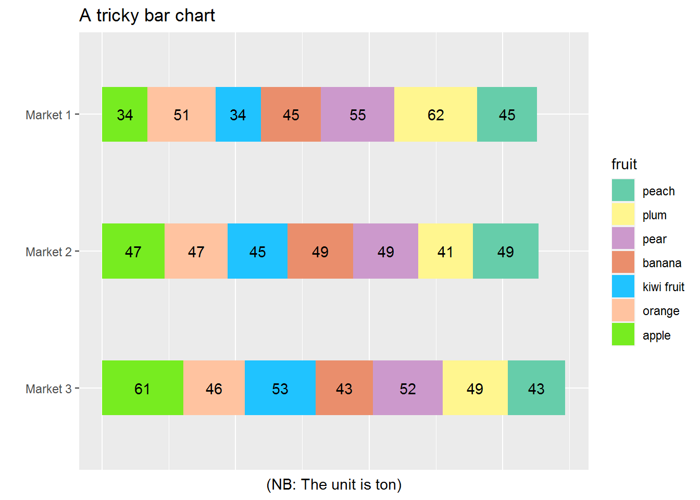

4 Tricky plotting
4.1 Bar charts
We are going to create a bar chart. Here the requirements are:
- Bars are horizontal
- Bars are stacked
- In order, that is, the labels are in some order and the bars stacked in some order
- For each bar, put a number in the middle
- Using the colors provided by us rather than the default one
library(dplyr)
library(ggplot2)
# utility functions -------------------------------------------------------
## a helper function to find moving averages, which will be the positions for
## the counts
my_mv_avg <- function(x)
{n <- length(x)
y <- rep(0, n)
y[1] <- x[1] / 2
for(i in 2:n)
y[i] <- (x[i-1] + x[i]) / 2
y
}
## self-defined scale_fill
scale_fill_larry <- function(...){
ggplot2:::manual_scale('fill',
values = setNames(c("#77ec20",
"#ffc3a0",
"#20c3ff",
"#EA8E6C",
"#cc99cc",
"#fff68f",
"#66cdaa"),
c("apple",
"orange",
"kiwi fruit",
"banana",
"pear",
"plum",
"peach")),
...)}
# data --------------------------------------------------------------------
## prepare data
fake_raw_data <-
data.frame(market = sample(c("Market 1",
"Market 2",
"Market 3"), 1000, replace = TRUE),
fruit = sample(c("apple",
"orange",
"kiwi fruit",
"banana",
"pear",
"plum",
"peach"), 1000, replace = TRUE))
plotting_df <-
fake_raw_data %>%
group_by(market, fruit) %>%
tally() %>%
mutate(fruit = factor(fruit, levels = c("apple",
"orange",
"kiwi fruit",
"banana",
"pear",
"plum",
"peach"))) %>%
ungroup() %>%
group_by(market) %>%
arrange(market, fruit) %>%
mutate(count_cum = cumsum(n)) %>%
mutate(plot_posi = my_mv_avg(count_cum))
# plotting ----------------------------------------------------------------
p <-
plotting_df %>%
# the order should be top-down or right-left
# thus need to set the levels manually
mutate(fruit = factor(fruit, levels = c("peach", "plum", "pear", "banana",
"kiwi fruit", "orange", "apple"))) %>%
ggplot(aes(x = market, y = n, fill = fruit)) +
geom_bar(stat = "identity", position = "stack", width = 0.4) +
geom_text(aes(x = market, y = plot_posi,
label = scales::comma(n))) +
labs(x = "", y = "(NB: The unit is ton)", title = "A tricky bar chart") +
# use specified colors to fill
scale_fill_larry() +
# horizontal bars
coord_flip() +
# put the labels in a specific order
scale_x_discrete(limits = c("Market 3", "Market 2", "Market 1")) +
theme(# axis.title.x = element_blank(),
axis.text.x = element_blank(),
axis.ticks.x = element_blank())
print(p)